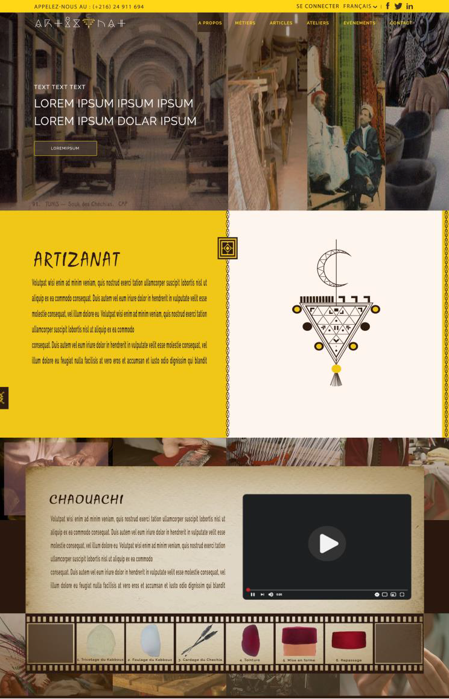
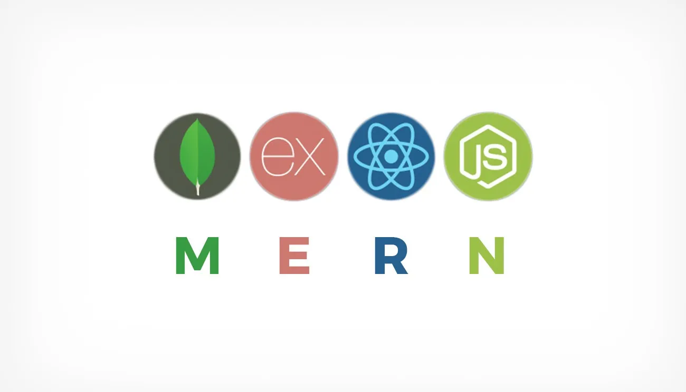

L'aventure a commencé en 2018, lorsque j'ai décidé de faire une reconversion
professionnelle vers le web. J'ai commencé en tant qu'intégrateur en travaillant avec les
CMS Wordpress et Prestashop. Puis, j'ai voulu aller plus loin en réalisant par moi même des sites web from scratch.
J'ai appris à le faire avec ReactJS et ExpressJs. Le métier de développeur
me plait beaucoup mais souhaitant évoluer dans une discipline qui allie d'avantage le relationnel au technique, j'ai
migré vers le test et la validation des applications web. Je suis tombé amoureux de cette displine surtout quand j'ai
débuté l'automatisation des tests avec Sélénium WebDriver. Aujourd'hui, je suis fier de mon parcours et je souhaite trouver un CDI pour
mettre mon expertise et mon savoir faire au service de l'entreprise.
Mes compétences
HTML Javascript Prestashop CSS Wordpress Photoshop Illustrator PHP ReactJs expressJs Sélénium WebDriver TestLink Java Page Object Model Page Factory MySql MongoDB Postman
Mes réalisations
Septembre, 2019
Réalisation d'un site web en utilisant Prestashop

Ce projet était mon premier challenge web. Je l'ai réalisé pour le compte de la startup tunisienne i-360 pendant
le stage de fin d'étude de mon master à l'ICOM Lyon2. Il s'agissait de customiser le template par défaut
de Prestashop et de le rendre conforme à la maquette photoshop du client pour un site dédié
à la promotion et à la vente de l'artisanat. La customisation a débuté par des simples moditifcations de style
et d'ajout d'éléments HTML pour finir par la création d'un module Prestashop.
Réalisation d'un site web avec la technologie MERN

A la fin de ma formation chez GOMYCODE en développement web fullstack, j'ai réalisé un site web d'annonces
gratuites de produits de bricolage et de jardinage. J'ai utilisé la technologie Reactjs pour le frontend et le framework ExpressJs
pour le backend et MongoDB comme SGBD. Ce fut une belle expérience meme si mon projet n'a pas été déployé sur un serveur web et j'ai
beaucoup appris. Voici le lien github du projet :
BricoDeco
Cette réalisation est un projet test démo, réalisé avec le langage Java et l'API de test automatisé Sélénium WebDriver.
J'ai choisis de tester quelques fonctionalités du site web :
https://opensource-demo.orangehrmlive.com, en utilisant le framework Cucumber pour écrire
les scénarios de test et en appliquant le concept de Page Object Model que j'ai implémenté en
s'aidant de la classe PageFactory. A la fin des tests, un rapport de test au format HTML est publié ainsi que des
imprimées écran et des vidéos illustrant tout le processus sont créés. Ce projet est à mon avis un bon départ, pour construire
des projets plus consistants.
Je teste les fonctionalités d'un web site e-commerce dédié à l'automatisation de Test :
⏩ Le site est https://automationexercise.com/
⏩ J'utilise Sélénium WebDriver sous JAVA
⏩ J'utilise le Framework de test unitaire TestNg
⏩ J'applique le concept de Page Object Model
⏩ J'implémente DataProvider pour lire les données d'un fichier Excel
⏩ J'implémente Extent Report en utilisant les Listeners